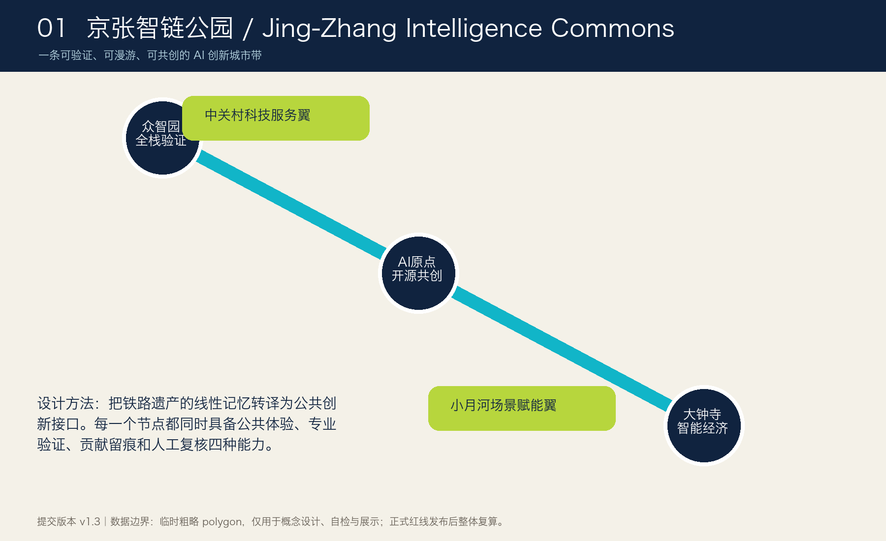
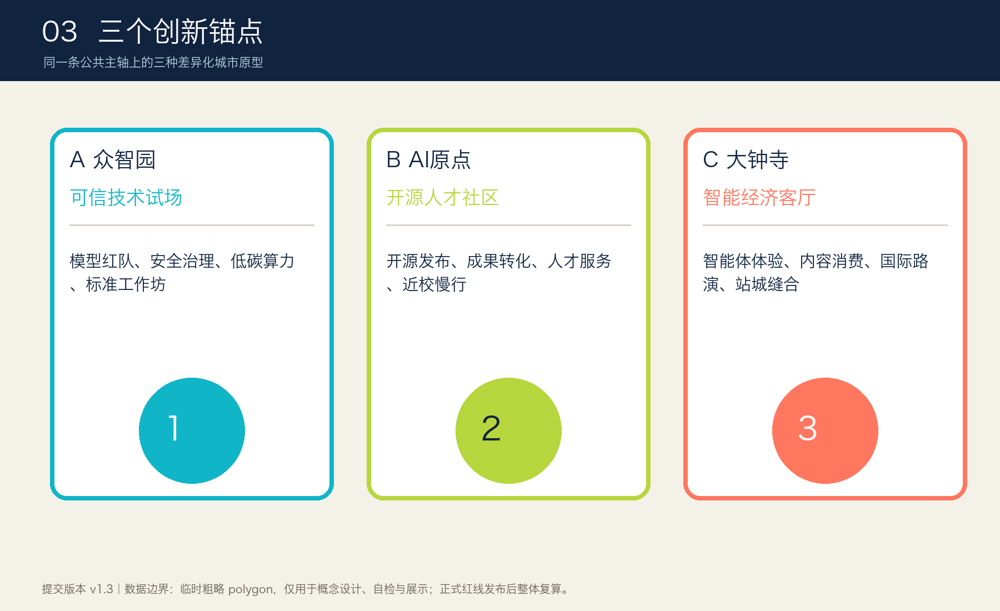
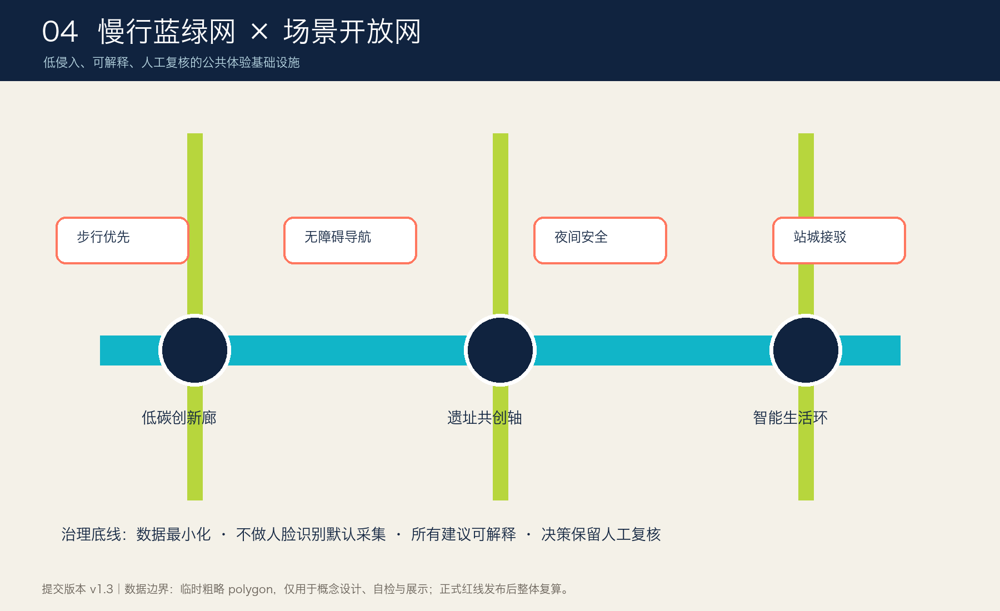

当前采用仓库临时粗略边界，仅用于概念设计、自检和展示；不得作为官方红线、控规、工程或投资依据。
总览地图与三层范围
统筹研究、总体设计与重点区域逐级落实；图面不是官方地图。
核心指标

用地分区与重点区域
四类概念用地组织创新、绿地、产业服务与社区配套。

交通慢行与蓝绿公共空间
以京张遗址公园为连续公共主轴，叠加低侵入场景开放网络。

建筑与更新项目
保留优先、低扰动改造；具体拆改留须等待权属、测绘和控规资料。
AI 场景与自检状态
12 张场景卡均设置数据最小化、人工复核和退出机制；临时边界为持续披露项。
任务覆盖
品牌与总体结构
三大定位 · 五大功能 · 三区两翼
创新生态
6个案例机制 · 三锚协同
AI+场景
12张场景卡 · 4类受控测试
公共文化
3个朝圣/荣誉节点
长期运营
周/月/季/年节律
SELF-CHECK
结构化数据优先
来源与假设
事实来自仓库中批准的官方公告、清权任务书摘要和专业标准；空间几何来自 provisional-only 数据。控规、权属、现状建筑、道路红线、文保、市政和公共服务底数仍待官方或清权资料。